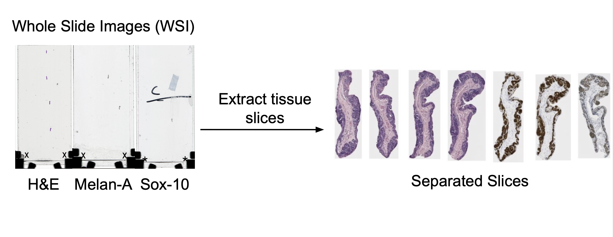
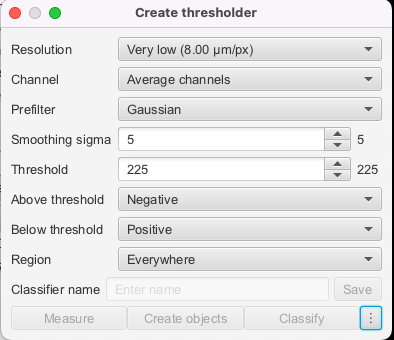

Step 1: Slice Extraction
Aim: To extract the tissue slices from the Whole slide images (WSI)

Methodology
Currently, extracting slices is done manually. This process begins by manually importing the whole slide image into QuPath. From here, each slice is individually annotated. This is done in one of two ways. One option is to use the manual annotation tools. Most often, the brush tool is used to highlight the individual slice, and then each slice can be highlighted and exported as its own .tif file. The other option is to use the create thresholder feature (top bar -> classify -> pixel classification -> create thresholder). The settings can be seen below (though you may need to adjust slightly to ensure whole slice is annotated). From here, you can export in the same way as before.

Results
Future Automation
This method has been explored as a future solution to fully automate the extraction of the slices from the whole slide image. Currently, the efforts have been focused elsewhere, and the automation will be further fleshed out in the future.
This method employs a Groovy script in QuPath to automate the identification, processing, and export of tissue regions of interest (ROIs) from Whole Slide Images (WSIs). Key scripts, including tissues_2.json, automate_export_newest.groovy, and existing_annotations.groovy, enable efficient processing and handling of diverse stain types. After setting up the project and placing scripts in their designated directories, the automate_export_newest.groovy script is executed to detect and export regions of interest (ROIs) as tissue slices, which are saved in the processed_data folder.
The process begins by ensuring the image is not a mask file before applying stain deconvolution to separate Hematoxylin and Eosin (H&E) stains using predefined parameters for color deconvolution. If no annotations exist, a pixel classifier (tissues_2) is applied to detect tissue regions, generating initial annotations. These annotations are refined by merging those within a set distance threshold (5000 micrometers) to consolidate closely related tissue regions, leveraging centroid-based Euclidean distance calculations. Duplicate annotations with centroids closer than 50 micrometers are identified and removed to ensure clean and accurate outputs. Finally, the refined annotations are exported as high-resolution image tiles into a specified output directory, using a customizable downsample parameter to accommodate variations in image quality. This pipeline ensures efficient and accurate tissue ROI extraction, supporting downstream analysis and quality control.
Follow this step by step manual to extract slices.
Codes required:
tissues_1.json,tissues_2.jsonandautomate_export_newest.groovy- New for other stain types to expedite process:
existing_annotations.groovy
Setting up in QuPath
- Open a project that has all your images
- Put
tissue_2.jsonintobase_proj_dir/classifiers/pixel_classifiers(make if does not exist) Note, usetissues_2.jsonfor most recent results (nottissues_1but you can still try this too.tissues_2contains broader parameters for a more sensitive model, works on more stains and images) - Put
automate_export_newest.groovyintobase_project_dir/scripts(make if does not exist) - Make sure you have an image open in QuPath interface
- In QuPath, top bar –> Automate –> Project scripts –>
automate_export_newest.groovy - Script Editor has three vertical dots at the bottom –> Run for project
- Data will save in processed_data dir in your base project dir
To deal with more difficult stain types if you decide to manually annotate:
Runs like automate_export_newest.groovy but only if you already have annotations
- Need to set annotation class to “Positive” in QuPath (Annotations –> Positive –> Set selected and for future annotations to be auto “Positive,” press “Auto set”“)
- To export existing annotations only, run
existing_annotations.groovy existing_annotations.groovy–>base_project_dir/scripts- In QuPath, top bar –> Automate –> Project scripts –>
existing_annotations.groovy - Script Editor has three vertical dots at the bottom –> Run for project
- Data will save in processed_data dir in your base project dir
To create a new pixel classifier or modify (optional):
- QuPath Interface top bar –> Classify –> Pixel Classification –> Create thresholder
- See
tissues_1.jsonandtissues_2.jsonfor my parameters, and you can work from there - Save this and then replace
tissues_2in .groovy script.
Step 1: First pass of algorithm
Following the instructions above, open your image in QuPath and run this “annotation export newest” groovy script.

Select Run, then Run For Project

Note: If your automation fails while running due to a particularly large image or systematically fails on a stain type (i.e. Sheffield Sox10–most fail because reference image annotation is too large to export), you have two options: Manually annotate and export images (more on this later) Downsample an annotated area (last resort, but can successfully downsample up to a factor of 2 to match stakeholder’s desired resolution), can do this directly by changing the downsample parameter
Select your images to process. Not counting the mask images, I tended to process up to 20 at a time to reduce the memory load.

Step 2: Analyze results and troubleshoot
Once you run the automation for your images, I check in QuPath directly image by image to ensure all data was properly exported. You should also check in the processed_images dir created in your Qupath project dir that no image was corrupted or too blurry. In order of manual work needed, here are the possible cases for your images. They correspond with how we dealt with and logged processing these images in the Tracker Data of Status of Each Slice
Here are the six result cases we encountered and what to do with each one. Some require rerunning certain codes.
Case 1: perfect ROI identification Self-explanatory, all ROIs were successfully found and exported
Example: Liverpool h1831023

Case 2: merging Some of the region was not selected by the algorithm but belongs in the tissue sample This has to be determined across stains because some tissues might be separated in one type of stain but appear merged in another However, we don’t want to over-merge as the amount of whitespace makes matching difficult
Example of merging: h1846151 small hanging pieces are okay to merge

Example of when to not merge: h1810898B because sox10 looks similar to unmerged h&e


Then, rerun “existing annotations” groovy script to export faster and delete remaining ROIs in your file directory
Case 3: deletion For any of the following types of areas, delete the annotations in QuPath: Blank images Example: Sheffield 77

Splotches (shadows on the glass? blurs?)

Then, rerun “existing annotations” groovy script to export faster and delete remaining ROIs in your file directory to ensure consistent ROI numbering
Case 4: manual selection from poor selection Sometimes, the annotation region is specified correctly but with too much whitespace/unnecessary area outside Delete the original annotation, select a new region, set the class to Positive Then, rerun “existing annotations” groovy script to export faster and delete remaining ROIs in your file directory to ensure consistent ROI numbering
Example: selecting around the hair in h2114185 h&e

Example: h1845484 sox10: selection reduces the splotches’ area and prevents them from being exported extraneously

Case 5: manual selection from image too large If Qupath runs out of memory when trying to run images or is stuck on a particular one (ie most of Sheffield sox10 due to large reference tissues), I created a less memory-intensive existing annotations groovy script Select each annotation region manually in QuPath, then set class as Positive Then, rerun “existing annotations” groovy script to export faster and delete remaining ROIs in your file directory to ensure consistent ROI numbering
Example: reference tissues in most of Sheffield sox10–select actual tissue manually instead of running the algorithm–the large files like this will prevent efficient exports

Case 6: not even manual selection works to export large image Try to export each annotated area at a time by selecting, selecting class → Positive, and running the “existing annotation” groovy Worst case, downsample by 2.0 factor max Then, rerun “existing annotations” groovy script to export faster and delete remaining ROIs in your file directory to ensure consistent ROI numbering
Example: Sheffield 85 (lots of samples, junk images, and large files)
These are some ideas on how to create an API from Step 1 to Step 2 if the team decides to do so.
1. Using the paquo Library
paquo is a Python library designed specifically to interact with QuPath projects. It leverages the jpype library to seamlessly bridge Python and Java, making it possible to manipulate QuPath projects directly from Python. paquo provides native support for creating, editing, and running scripts within QuPath projects, aligning well with the goal of creating a Python-based API.
Advantages
Simplifies Java-Python interaction for people who have little experience with Java or Groovy
Native support for QuPath scripts and projects
Can be integrated into current project API (steps 2-3)
Challenges
JVM configuration can be prone to errors
Requires the correct QuPath version
References:
https://paquo.readthedocs.io/en/latest/
https://forum.image.sc/t/paquo-read-write-qupath-projects-from-python/41892
2. Using Python with QuPath CLI
QuPath provides a command-line interface (CLI) that can be accessed through Python’s subprocess module. This allows Python scripts to execute Groovy-based workflows in QuPath indirectly.
Advantages
- Don’t need a JVM setup in Python
- Simple and lightweight
Challenges
- Limited feedback from QuPath to Python
- Requires separate Groovy scripts
- References:
https://www.imagescientist.com/command-line-and-python
https://forum.image.sc/t/automating-qupath-pipeline-completely-using-python/72341
3. Standalone Java Application
A Java application can directly utilize the QuPath API to interact with projects, import images, and execute scripts. This approach bypasses Python entirely and offers complete control over QuPath’s capabilities. A Java-based solution can serve as a standalone API or backend that exposes QuPath functionalities via user-friendly interfaces (e.g., GUIs or REST endpoints).
Advantages
- Direct access to all QuPath functionalities
- Full performance optimization in Java
Challenges
- Requires Java programming expertise
- References: https://forum.image.sc/t/load-project-from-a-project-file-using-qupath-java-api/63613
4. Python and Java with Jython
Jython enables Python scripts to directly execute Java code. It acts as a bridge between Python and Java but is limited to Python 2.x. Jython can provide a direct way to call QuPath’s Java API from Python-like syntax, enabling API functionalities like project management and script execution.
Advantages
- Direct access to Java classes
Challenges
- Limited to Python 2.x.
- No support for modern Python features
- Requires Java programming expertise
- Reference: https://github.com/qupath/qupath/wiki/Working-with-Python